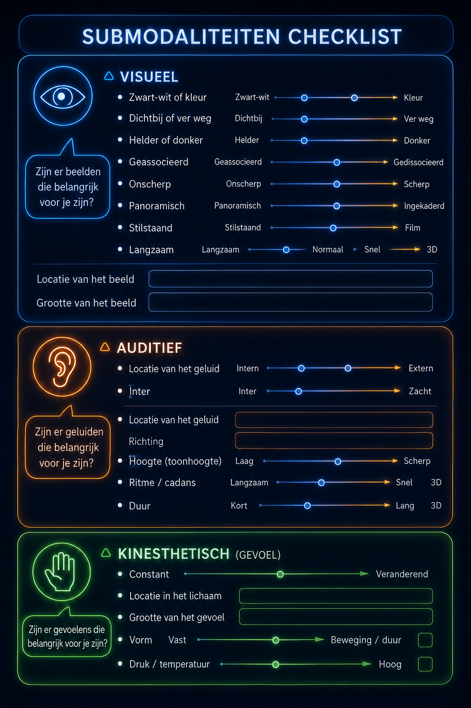

Submodaliteiten
Submodaliteiten in NLP
Submodaliteiten zijn de kleine details van je interne beleving zoals helderheid, afstand, volume en intensiteit van wat je ziet, hoort en voelt. Deze "instellingen" bepalen hoe sterk je een ervaring beleeft.
Door je hiervan bewust te worden, ontdek je dat je invloed hebt op je beleving. Verander je de submodaliteiten, dan verandert direct de emotionele impact van een herinnering of gedachte.
Alles wat je ervaart bestaat uit drie gebieden: beelden (visueel), geluiden (auditief) en gevoelens (kinesthetisch). De manier waarop deze zijn ingesteld bepaalt de betekenis die je eraan geeft.
Door bewust te spelen met deze instellingen, bijvoorbeeld een beeld kleiner maken of verder weg plaatsen kun je je ervaring direct beïnvloeden en veranderen.
